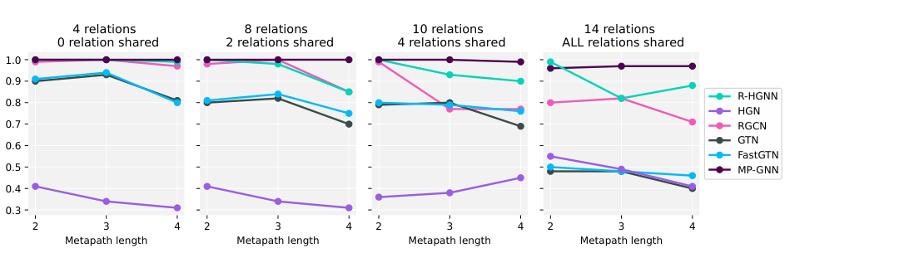
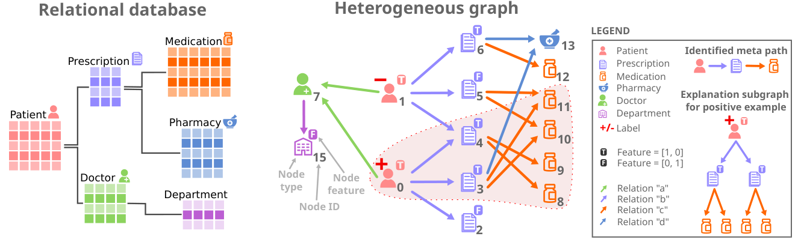
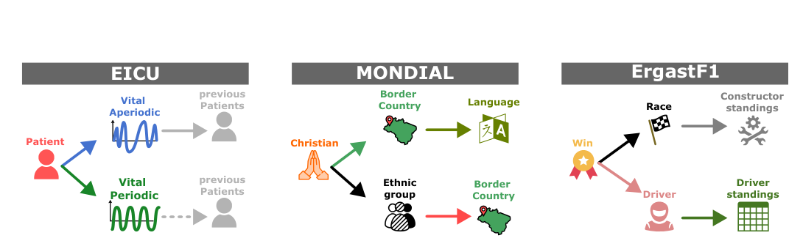

On the Importance of Meta-Paths: From MP-GNN to Explainable Relational Deep Learning
In heterogeneous graphs, the right prediction often depends on following the right chain of relations. MP-GNN learns these chains automatically; MPS-GNN extends the idea to relational databases, where repeated path patterns and their statistics can matter more than a single path occurrence.
The problem: not every relation matters equally
Many graph neural networks are designed for homogeneous graphs, where all edges are treated as if they had the same meaning. Real data is often richer than that. Knowledge graphs, citation networks, movie graphs, and relational databases contain many node types and many relation types.
In these heterogeneous graphs, useful information is not usually spread uniformly across all relations. A prediction may depend on a specific relational route: for example, an actor connected to a movie, then to a director, then to an award-related attribute. This route is a meta-path: a sequence of relation types that tells the model where information should flow.
The hard part is finding the right meta-paths. Some methods ask domain experts to define them in advance. Other methods learn weights over many relations, but this becomes difficult when the number of candidate relations grows. The work summarized here addresses a direct question: can a graph neural network learn useful meta-paths by itself?
First step: what MP-GNN does
Meta-Path Graph Neural Network (MP-GNN) is built around the idea that a multi-relational graph neural network should not blindly aggregate across all relations. Instead, it should first identify a small set of informative meta-paths, then use those meta-paths to guide message passing.
MP-GNN learns meta-paths incrementally. Starting from the target node classification task, it scores candidate relations according to their potential informativeness. A relation receives a good score if, by following that relation, the model can reach nodes whose features or learned weights help explain the target labels.
After choosing the best first relation, MP-GNN turns the reached nodes into the next local learning problem. The same process is repeated to extend the meta-path one relation at a time. This creates a greedy search over the space of relation chains, without requiring the model to enumerate every possible meta-path.
Once a candidate meta-path is found, MP-GNN builds a graph neural network whose layers follow that meta-path. Each layer corresponds to one relation in the learned sequence. In this way, the learned architecture encodes the relational route used for prediction.
Why this is useful
MP-GNN makes meta-paths part of the model rather than a hand-crafted input. This matters for two reasons.
- It reduces the need for expert-designed meta-paths.
- It makes the model easier to inspect, because the learned meta-paths describe which chains of relations the model uses.
The method is especially relevant when many relation types are available. In that setting, searching for all possible paths is combinatorial, while learning relation chains step by step gives a more focused way to find useful structure.
What MP-GNN shows
The MP-GNN paper evaluates whether the method can recover informative meta-paths in synthetic settings where the correct relation chain is known. These experiments vary the number of relations, the number of shared relations, and the length of the ground-truth meta-path.
The reported results show that MP-GNN remains strong as the search space becomes more complex. In many synthetic settings, it reaches optimal or near-optimal F1 scores and recovers the ground-truth meta-path exactly. The paper also evaluates real-world benchmarks with few relations, such as DBLP, IMDB, and ACM, and many-relation tasks derived from FB15K-237.

The limitation: MP-GNN looks for existence
MP-GNN is a strong first step, but it relies on an existential view of meta-paths. In simple terms, a node can be classified using the existence of at least one useful meta-path occurrence.
This is reasonable in many knowledge graph settings. Sometimes one relational witness is enough. But relational databases often behave differently. There, the signal may not be whether one path exists, but how many times a path occurs, how occurrences are distributed, or whether repeated patterns satisfy some count-based condition.
Why relational databases need more than existence
A relational database can be converted into a heterogeneous graph: rows become nodes, attributes become node features, and foreign-key links become typed edges. This makes relational databases a natural target for heterogeneous GNNs.
However, database predictions often depend on aggregate information. For example, a patient may not be characterized by having one prescription linked to one medication, but by having multiple prescriptions, each linked to multiple medications. The relevant pattern is not just a path. It is a statistic over path occurrences.

Second step: how MPS-GNN extends MP-GNN
Meta-Path Statistics Graph Neural Network (MPS-GNN) keeps the central lesson of MP-GNN: learn the relational routes that matter. The difference is that MPS-GNN does not restrict usefulness to the existence of a single meta-path instance.
Instead, MPS-GNN learns meta-paths whose predictive content can come from statistics computed over their realizations. This includes count-based patterns such as having multiple related entities that themselves satisfy another repeated relational condition.
Technically, the main change is in the scoring step. MP-GNN uses a max-style mechanism that captures whether at least one useful neighbor exists. MPS-GNN uses a sum-based formulation and weighted multi-instance classification, allowing multiple neighbors and repeated occurrences to contribute to the score.
After a relation is selected, MPS-GNN creates a new local surrogate task over the reached nodes and continues the construction of the meta-path. The final GNN then performs message passing along the learned meta-paths, with skip connections that preserve access to node attributes across layers.
Why MPS-GNN is self-explainable
MPS-GNN is designed so that the explanation is part of the model. The scoring function identifies the relevant meta-paths, and the predictor is built on the subgraphs induced by those meta-paths.
This means the meta-paths are not post-hoc explanations added after training. They define the relational structure available to the model. As a result, the learned meta-paths provide a model-level explanation of how information is routed through the heterogeneous graph.
What MPS-GNN shows
The MPS-GNN paper evaluates the method on synthetic relational settings and on real relational database tasks: EICU, MONDIAL, and ErgastF1. In the synthetic settings, MPS-GNN is designed to handle cases where the label depends on counts and repeated occurrences, while MP-GNN is limited by its existential assumption.
On the real-world relational database tasks, the paper reports mean F1 scores of 0.92 on EICU, 0.74 on MONDIAL, and 0.83 on ErgastF1 for MPS-GNN. In the same table, MP-GNN obtains 0.87, 0.36, and 0.71. The paper reports MPS-GNN as the best-performing compared method on these three datasets.

The main idea
The progression from MP-GNN to MPS-GNN is simple but important. MP-GNN shows that learning meta-paths can make multi-relational GNNs more focused and interpretable. MPS-GNN shows that, for relational databases, meta-paths should not only be treated as existential patterns. Their statistics can carry the predictive signal.
Together, the two works argue for a meta-path-centered view of heterogeneous graph learning: first learn where information should flow, then let the GNN compute over that selected relational structure.
Limitations and scope
MP-GNN is most appropriate when the existence of a meta-path occurrence is informative. MPS-GNN extends this to statistical patterns over repeated occurrences, but it does not make every internal feature computation transparent. The meta-paths explain the relational routes used by the model, while full feature-level transparency remains a separate challenge.
Both methods are presented primarily for node classification. Their behavior also depends on how the original data is represented as a heterogeneous graph, including relation definitions, node attributes, and the target prediction task.
Source note
This page summarizes two papers by Francesco Ferrini, Antonio Longa, Andrea Passerini, and Manfred Jaeger: Meta-Path Learning for Multi-relational Graph Neural Networks, published in the Proceedings of the Second Learning on Graphs Conference, PMLR 231, 2023; and A Self-Explainable Heterogeneous GNN for Relational Deep Learning, published in Transactions on Machine Learning Research, February 2025.
Main references
- Meta-Path Learning for Multi-relational Graph Neural Networks, Francesco Ferrini, Antonio Longa, Andrea Passerini, and Manfred Jaeger, LoG 2023.
- A Self-Explainable Heterogeneous GNN for Relational Deep Learning, Francesco Ferrini, Antonio Longa, Andrea Passerini, and Manfred Jaeger, TMLR 2025.
- MPS-GNN code repository.